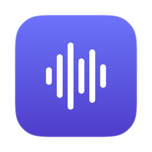

Sori내 목소리만 녹음되셨나요
단축키 하나로
간편한 녹음
시작도 멈춤도 ⌃ ⌘ R 하나입니다. 내 목소리와 상대 목소리를 함께 담고, 텍스트로 받아씁니다.
transcript.txt
2026-07-24 14:03
SPEAKER 100:00
네 그러면 오늘은 가입 이탈 건 보려고 하는데요 지난주에 주신 수치가 3단계에서 절반 넘게 빠지는 걸로 나와 있어서 그 부분부터 보면 좋을 것 같습니다
SPEAKER 200:11
맞습니다 정확히는 오십사 퍼센트고요 그 단계가 본인 인증 넣은 화면이라 거기서 빠지는 건 어느 정도 예상은 했는데 생각보다 폭이 큽니다
SPEAKER 100:24
인증을 뒤로 미루는 건 검토해 보셨어요
SPEAKER 200:29
가입 다 끝내고 첫 결제 직전으로 옮기는 안을 보고 있는데 그러면 인증 안 한 계정이 쌓이는 문제가 있어서 정책팀이랑 한 번 더 이야기해야 할 것 같아요
예시 — 내 목소리와 상대 목소리를 따로 녹음해 말한 사람이 나뉩니다 받아쓰기는 macOS 26 이상
01
누르면 바로 녹음
어느 앱에 있든 같은 단축키로 시작하고 멈춥니다. 창을 띄우거나 장치를 고를 일이 없습니다.
02
상대 목소리도 담깁니다
화상회의든 영상이든, 스피커로 나오는 소리를 그대로 녹음합니다. 케이블도 별도 프로그램도 필요 없습니다.
03
이 맥 안에서 끝납니다
받아쓰기까지 이 맥에서 이뤄집니다. 녹음과 텍스트를 서버로 보내는 코드는 없습니다.
시작하기
- 응용 프로그램으로 드래그 내려받은 파일을 열면 바로가기가 함께 들어 있습니다.
- Sori 실행
- ⌃ ⌘ R 로 녹음 마이크와 화면 기록 권한을 묻습니다. 화면을 녹화하지는 않습니다 — 맥이 시스템 소리를 그 권한 아래에 두고 있어서입니다.